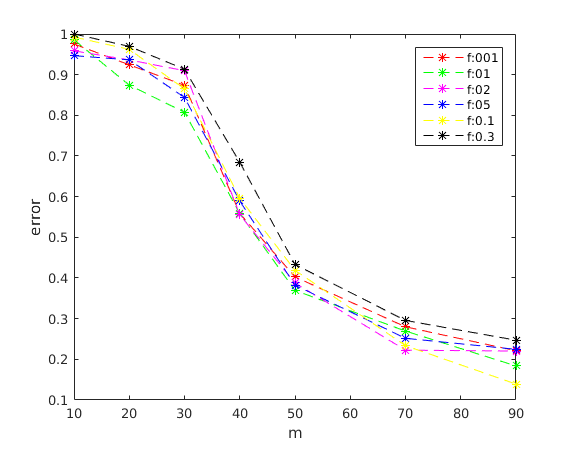
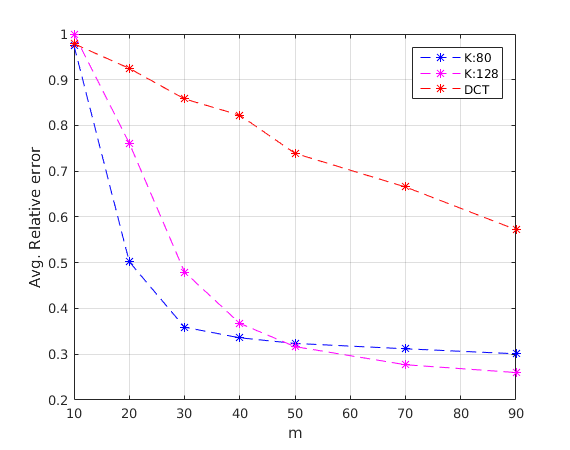
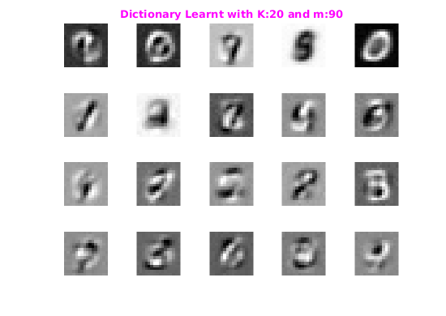
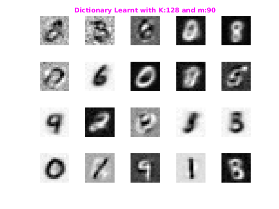
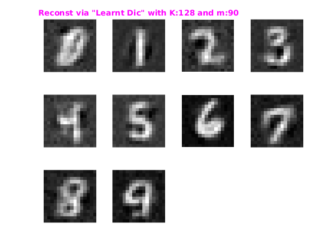
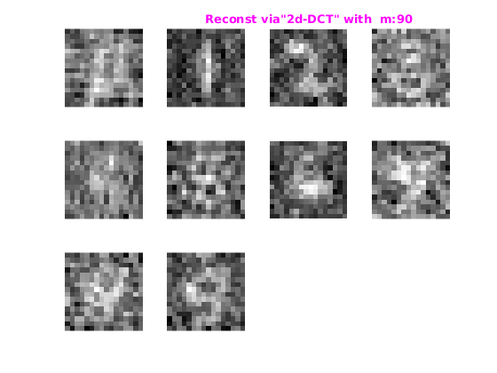
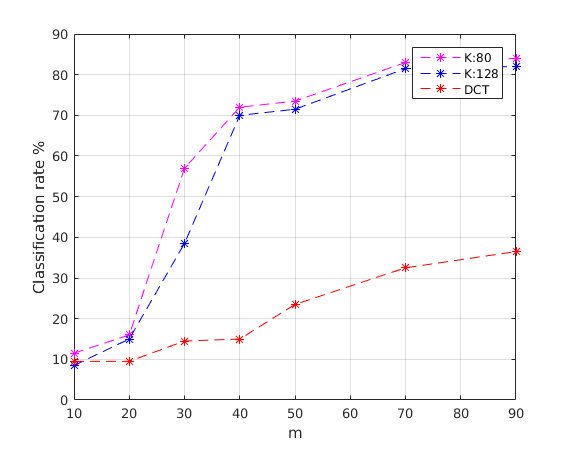

Assignment4-1: KSVD
Rollno: 163059009, 16305R011
Contents
- Init
- 1. Part a: Creating Dictionary
- 1.1 Creating Signal
- 1.2 Finding Dict,xCoeff for every
- 1.2.1 Create Y and PHI
- 1.2.2 Blind Sensing
- 1.2.3 average relative error
- 1.3 Ploting Graph
- 2.PART B
- 2.1 Reading dataset
- 2.2 Taking 600 samples per digit and 20 sample as test from train set
- 2.3 Learning
- 2.4 Plot of Avg. Relative Error
- 2.5 Sample Plot of Dictionary learnt
- 2.6 Showing Reconstruction Result M=90
- 2.7 Observation
- 3 Part C : Classification
- 3.1 Reading Data
- 3.2 Training: Learning Dictionary
- 3.3 Plot Classification rate
Init
m=[10,20,30,40,50,70,90]; f=[0.001, 0.01, 0.02, 0.05, 0.1, 0.3];
1. Part a: Creating Dictionary
K=20;p=100; D=randn(p,K); % unit normalization for i=1:K; D(:,i)=D(:,i)/norm(D(:,i)); end
1.1 Creating Signal
signal
N=100; X=zeros(N,p); for i=1:N support=randi([1 20],1,5); coeff=randi([0 10],1,5); X(:,i)=coeff*D(:,support)'; end
1.2 Finding Dict,xCoeff for every
avgError=zeros(size(f,2),size(m,2)); epsilon=1e-4; for fi=1:size(f,2) for mi=1:size(m,2)
fprintf('**f:%f m:%f\n',f(fi),m(mi));
1.2.1 Create Y and PHI
[y,phi,phiTphi,stdev] = initDataSet(X,p,N,m(mi),f(fi));
1.2.2 Blind Sensing
[Dict,xCoeff]=ksvd1(y,phi,phiTphi,stdev,p,X,K,epsilon);
1.2.3 average relative error
rerr=0;
predX=Dict*xCoeff;
avr=avgRelativeError(X, predX);
fprintf('%f\n',avr);
avgError(fi,mi)=avr;
end end
1.3 Ploting Avg Relative error Graph
figure('name','Avg. Relative error') avgError=avgError/max(avgError(:)); x=m; c = {'r','g','m','b','y','black'}; for i=1:size(f,2) y=avgError(i,:); plot(x,y,strcat('*--',c{i})),hold on end xlabel('m'); ylabel('error'); legend('f:001','f:01','f:02','f:05', 'f:0.1','f:0.3');
2.PART B
2.1 Reading dataset
%clear all; trainFP='../data/train-images.idx3-ubyte'; trainLabelFP='../data/train-labels.idx1-ubyte'; [trainDS,trainLabel]=loadMNISTImages(trainFP,trainLabelFP);
2.2 Taking 600 samples per digit and 20 sample as test from train set
noImgPerDigit=600;testImgPerDigit=20;imgDim=[16,16]; [trainSampleImg,testSampleImg] = extractDigitFromDS(trainDS,trainLabel,imgDim,noImgPerDigit,testImgPerDigit);
2.3 Learning
m=[10,20,30,40,50,70,90];f=0.01; k=[20,128];epsilon=0.5; dctDic=kron(dctmtx(16)',dctmtx(16)'); avg=zeros(numel(m),numel(k)+1); tic for mi=1:numel(m) mVal=m(mi);trainPhi=[];phiTphi=[]; p=imgDim(1)*imgDim(2); [trainY,trainPhi,phiTphi,stdev] = initDataSet(trainSampleImg,p,noImgPerDigit*10,mVal,f); [testY,testPhi,~,~] = initDataSet(testSampleImg,p,testImgPerDigit*10,mVal,f); fprintf('---------------[m=%d]------------\n',m(mi)); finalMDic=cell(2,1); for ki=1:numel(k) K=k(ki); % Blind C.S [Dict,xCoeff]=ksvd1(trainY,trainPhi,phiTphi,stdev,p,trainSampleImg,K,epsilon); finalMDic{ki,1}=Dict; % Testing With Learnt Dictionary [xCoeff_ld ] = mnistTestDictionary(testY,testPhi,Dict,K); avg(mi,ki)=avgRelativeError(testSampleImg, Dict*xCoeff_ld); fprintf('* Avg Relative error for reconst K=%d m=%d: Learnt Dic:%f \n',K,m(mi),avg(mi,ki)); end % Testing With 2d-dct [xCoeff_dct ] = mnistTestDictionary(testY,testPhi,dctDic,p); avg(mi,3)=avgRelativeError(testSampleImg, dctDic*xCoeff_dct); fprintf('* Avg Relative error for reconst Dct m=%d: Learnt Dic:%f \n',m(mi),avg(mi,3)); clear trainPhi; clear phiTphi; clear testPhi; end toc
Elapsed time is 0.000417 seconds.
2.4 Plot of Avg. Relative Error
Saving result, as computaion take lot of time.
%ar=[1.43582507102219,1.47311022290318,1.44161561024575;0.739858959113047,1.12173712426321,1.36259732663280;0.529096232944518,0.706685417784461,1.26414821496327;0.494868704273532,0.541428800858013,1.21166575432871;0.476777496154944,0.466403455015577,1.08882794296314;0.459544304033737,0.408229865999871,0.980470443744333;0.443397365520370,0.382988035062376,0.843107021588696] figure('name','Avg. Relative error') avg=ar; avg=avg./max(avg(:)); x=m; c = {'b','m','r'}; for i=1:size(avg,2) y=avg(:,i); plot(x,y,strcat('*--',c{i})),hold on end grid on; xlabel('m'); ylabel('Avg. Relative error'); legend('K:80','K:128','DCT');
2.5 Sample Plot of Dictionary learnt
figure('name','Dictionary') % K=20 m=90 Dict=finalMDic{1}; for i=1:20 subplot(4,5,i); img=reshape(Dict(:,i),16,16); imshow(img,[]); end curfig=gcf; title(curfig.Children(end-2),'\fontsize{10}{\color{magenta}Dictionary Learnt with K:20 and m:90}'); save('D_20_90.mat','Dict'); % K=128 m=90 figure('name','Dictionary') Dict=finalMDic{2}; for i=1:20 subplot(4,5,i); img=reshape(Dict(:,i),16,16); imshow(img,[]); end curfig=gcf; title(curfig.Children(end-2),'\fontsize{10}{\color{magenta}Dictionary Learnt with K:128 and m:90}'); save('D_128_90.mat','Dict'); 
2.6 Showing Reconstruction Result M=90
Showing Reconstruction for K-128 and M=90
figure('name','Reconstruction Learnt Dic Result') Dict=finalMDic{2}; for i=1:10 subplot(3,4,i); imshow(reshape(Dict*xCoeff_ld(:,(i-1)*testImgPerDigit+13),16,16),[]) end curfig=gcf; txt=strcat('\fontsize{10}{\color{magenta}Reconst via "Learnt Dic" with K:128 and m:90}'); title(curfig.Children(end-1),txt); %DCT figure('name','Reconstruction 2d-DCT Result') for i=1:10 subplot(3,4,i); imshow(reshape(dctDic*xCoeff_dct(:,(i-1)*testImgPerDigit+13),16,16),[]) end curfig=gcf; txt=strcat('\fontsize{10}{\color{magenta}Reconst via"2d-DCT" with m:90}'); title(curfig.Children(end-2),txt); 
2.7 Observation
Reconstruction using the learnt basis is much better than the DCT bais when M is 90 i.e with less no. of measurment the reconstruction using learnt method is very good as compared to DCT dictionary Also with K as 128, it give much better result than K as 20.
3 Part C : Classification
3.1 Reading Data
trainFP='../data/train-images.idx3-ubyte'; trainLabelFP='../data/train-labels.idx1-ubyte'; [trainDS,trainLabel]=loadMNISTImages(trainFP,trainLabelFP); testFP='../data/t10k-images.idx3-ubyte'; testLabelFP='../data/t10k-labels.idx1-ubyte'; [testDS,testLabel]=loadMNISTImages(trainFP,trainLabelFP); noImgPerDigit=600;testImgPerDigit=20; [trainSampleImg,~] = extractDigitFromDS(trainDS,trainLabel,[16,16],noImgPerDigit,0); [testSampleImg,~] = extractDigitFromDS(testDS,testLabel,[16,16],testImgPerDigit,0); lg=meshgrid([1:600]);lg=lg(:,1:10); trainSampleLabel=reshape(lg,size(lg,1)*size(lg,2),1); lg=meshgrid([1:20]);lg=lg(:,1:10); testSampleLabel=reshape(lg,size(lg,1)*size(lg,2),1); clear trainDS; clear trainLabel;clear testDS; clear testLabel; imgDim=[16,16];
3.2 Training: Learning Dictionary
m=[10,20,30,40,50,70,90]; k=[80,128];f=0.01; classificationRate=zeros(numel(m),numel(k)+1); dctDic=kron(dctmtx(16)',dctmtx(16)'); epsilon=1e-1; tic for mi=1:numel(m) mVal=m(mi);phi=[];phiTphi=[]; X=trainSampleImg; N=noImgPerDigit*10; p=imgDim(1)*imgDim(2); [trainY,trainPhi,phiTphi,stdev] = initDataSet(X,p,N,mVal,f); [testY,testPhi,~,~] = initDataSet(testSampleImg,p,testImgPerDigit*10,mVal,f); fprintf('---------------[m=%d]------------\n',m(mi)); for ki=1:numel(k) K=k(ki); % Blind C.S [Dict,trainXCoeff]=ksvd1(trainY,trainPhi,phiTphi,stdev,p,X,K,epsilon); % Testing: With Learnt Dictionary [testXCoeff] = mnistTestDictionary(testY,testPhi,Dict,K); % classifiying [cRate] = nearestNeighbour(trainXCoeff,trainSampleLabel,testXCoeff,testSampleLabel); classificationRate(mi,ki)=cRate; end % Testing: With 2d-DCT Dictionary [trainXCoeff] = mnistTestDictionary(trainY,trainPhi,dctDic,p); [testXCoeff ] = mnistTestDictionary(testY,testPhi,dctDic,p); [cRate] = nearestNeighbour(trainXCoeff,trainSampleLabel,testXCoeff,testSampleLabel); classificationRate(mi,3)=cRate; clear trainPhi;clear phiTphi;clear testPhi; end toc
Elapsed time is 0.000666 seconds.
3.3 Plot Classification rate
Saving Result: As running (3.3) takes hrs to run
%cr=[11.5000,8.50,9.5000;16,15,9.5000;57.00,38.500,14.500;72,70,15;73.5000,71.5000,23.5000;83,81.5000,32.500;84,82,36.50]; figure('name','Classification') classificationRate=cr; x=m; c = {'m','b','r'}; for i=1:size(classificationRate,2) y=classificationRate(:,i); plot(x,y,strcat('*--',c{i})),hold on end grid on; xlabel('m'); ylabel('Classification rate %'); legend('K:80','K:128','DCT');